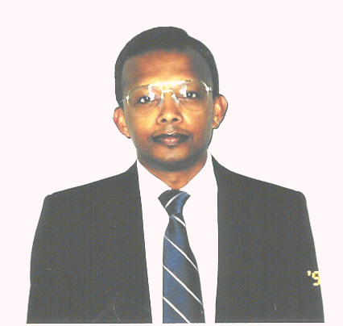

 THOMAS MATHEW Professor Department of Mathematics and Statistics University of Maryland Baltimore County 1000 Hilltop Circle Baltimore, MD 21250 USA Phone: 410 455 2418 Fax: 410 455 1066 e-mail:mathew@umbc.edu |
Education:
| Degree | Year | School | Major |
|---|---|---|---|
| B.S. | 1976 | University of Kerala (India) | Mathematics |
| M.S. | 1978 | University of Kerala (India) | Statistics |
| Ph.D. | 1983 | Indian Statistical Institute | Statistics |